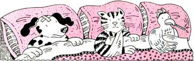

Issue # 103 - January/February 1987
What to do when your pet's feeling poorly.
Seeing a beloved pet hurt or seriously ill can be frightening and perplexing. But as a practicing veterinarian, I've seen my share of emergencies, and I'm convinced there are things pet owners can do to help make such situations manageable. Here's a short course.
Prevention is the best cure. The cliché bears repeating. Keep Pet out of trouble and you won't have any emergencies.
One of my biggest frustrations is knowing that nearly all the animal injuries I treat could have been avoided with a simple $5 purchase: a leash. A critter running loose in an environment where there are other animals and people (and people's garbage) is a disaster waiting to happen. Our California emergency clinic's statistics, for example, show that 30% to 40% of the animals we treat have been hit by cars, and another 30% to 40% have been in a fight. And almost all the rest have sustained other injuries or illnesses (such as food poisoning from eating garbage) that wouldn't have happened if the animals had been on a leash.
So either keep Pet confined to the house (or the kennel), or walk him on a leash. The up side to leash walking is that both of you will get a two- or three-times-daily workout-good for your health as well as Pet's.
Know your vet's availability. How do the veterinarians in your area handle after-hours emergencies? In some places each vet services all his or her own clients, 24 hours a day. In other areas after-hours calls are referred to a central emergency clinic. In either case, make sure you know the after-hours emergency number; write it down near (or better yet, tape it to) your phone.
Learn to recognize what is (and isn't) an emergency. Many medical problems eventually resolve themselves without any special care. On the other hand, there are instances where you'll need professional help, and quick. Here's a list of conditions that I feel warrant veterinary attention . . . ASAP. .
1Trauma. In my opinion, any case of trauma warrants a closer look by a veterinarian. If Pet was hit by a car or was in a dog-fight, whisk him off to the vet's . . . even if there are no outward signs of physical damage. The dog that's been hit by a car but appears unhurt could be slowly bleeding to death internally. The dogfight victim could have a tremendous amount of underlying muscle damage that an apparently unscathed skin won't reveal.
2. Visible blood, lots of it. I seldom need to tell anyone to bring in a pet that's bleeding. The sight of blood is enough to send Owner on the way to my clinic, posthaste.
It's also important, however, to do what you can immediately to stop or slow the bleeding. Bandages work fine on the human animal, but on hairy critters with oddball extremities (such as tails and paws), bandaging -at least in the hands of the inexperienced-is usually an exercise in futility. Your best bet is simple compression: Press or squeeze a clean towel (don't worry about sterility here; an open wound is already infected anyway) directly onto the bloody area and firmly hold it there until the bleeding stops or until you can get to the vet's.
3. Body temperature extremes. Very high or low body temperatures are valid reasons to see the emergency vet. Keep a rectal thermometer on hand for this purpose. For dogs and cats, any temperature over 103.5°F or under 99.5°F is cause for concern.
4. Distinctly abnormal behavior. Granted, many pets routinely exhibit behavior that can be considered . . . well, strange. What I'm referring to here is a drastic change in Pet's general attitude or personality. When a normally active cat can't be coaxed to come to dinner, or when a usually lovable dog growls whenever you touch him, it's time to see the vet-right away.
5. If you're worried. There's simply no way to compile a complete list of every emergency you might encounter as a pet owner. When in doubt, call your vet. A situation can be critical in one instance, and of no concern in another. The pooch, for example, who has just been munching the neighbor's garbage may have an evening's bout of vomiting and diarrhea . . . and feel perfectly fine the next morning. No problem there (unless, of course, the new carpet is suffering). The pup who is vomiting and has diarrhea from a case of parvovirus, on the other hand, can dehydrate rapidly and should have immediate care. The secret here is to give your vet a call and describe the symptoms and situation, to see whether treatment is warranted.
Stay calm. If you're faced with an emergency that demands prompt attention, the best advice I can give you is to stay calm. Easier said than done, you say. Perhaps, but keeping your cool is critical. In a calm frame of mind you'll be able to properly assess the condition and act as the medic that your pet needs. Most important, you'll impart your calmness to Pet-giving him an inner serenity that can be a lifesaver for an already stressed animal. So, take a deep breath and stay calm. It'll be good for both of you.
Don't hurt and don't get hurt. In almost all emergencies you'll need to transport Pet to the vet's. (Some areas have pet ambulances, but they're rare.)
Remember that if he's in pain, Pet may not recognize you-and he almost certainly won't know that you are only trying to help him. A critter's normal reaction to pain is to bite and claw. Don't risk getting hurt. Always muzzle or otherwise immobilize the chompers of an animal that has been traumatized.
You can make a simple muzzle for a longsnouted canine from three to four feet of strong cord (or two-inch-wide gauze). Tie a loop over the dog's snout using a simple overhand knot. Then tie another overhand knot under his chin and pass the cord back behind his ears, where you'll cinch the muzzle down with a bow knot.
An easy method for moving Pet is to gently place him on the center of a large towel or blanket. Then use the four corners to lift him into the transport vehicle.
Now that you and Pet are on your way to the vet's, remember: Drive carefully and stay calm. Chances are you'll both do just fine.
|
 BY THERESA ANDERKO |
|
|